Ontario curriculum · Grades 1–10
Maths practice that follows your child’s school year.
Numica gives children a clear path through Ontario maths, one topic at a time. You can see what they practised and how it’s going.
Currently in development. Numica is not yet for sale or available in app stores.
A companion to school. Numica is not affiliated with the Ontario Ministry of Education or any school board.
Ontario mathGrades 1–10
A whole grade, mapped
See the practice depth in every grade.
Each grade is organized into curriculum-linked topics. Inside those topics, authored question types create versions with different numbers and situations, across Easy, Medium, and Hard.
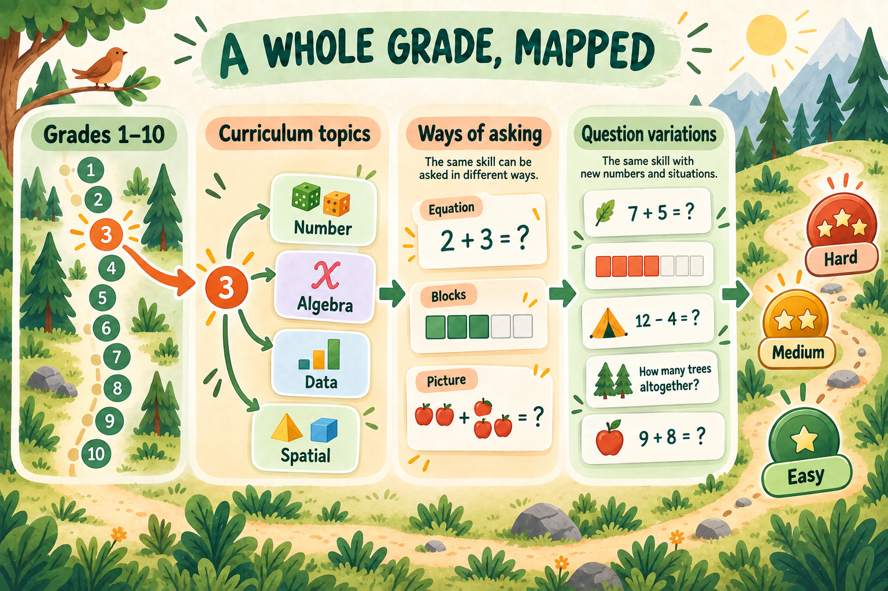
- TopicsEach grade is mapped to its curriculum-linked topics.
- Question typesEvery topic is asked several ways — a number sentence, a word problem, an estimation challenge and more.
- VariationsEach type generates variations with different numbers and situations, so practice keeps feeling fresh.
Grade
Grade 1 practice
38curriculum-linked topics
576authored question types
6,918available variations
180–240 available variations per topic
EasyMediumHard
Grade
Grade 2 practice
39curriculum-linked topics
605authored question types
7,260available variations
180–228 available variations per topic
EasyMediumHard
Grade
Grade 3 practice
46curriculum-linked topics
742authored question types
8,904available variations
180–324 available variations per topic
EasyMediumHard
Grade
Grade 4 practice
46curriculum-linked topics
629authored question types
7,548available variations
72–252 available variations per topic
EasyMediumHard
Grade
Grade 5 practice
49curriculum-linked topics
582authored question types
6,984available variations
72–216 available variations per topic
EasyMediumHard
Grade
Grade 6 practice
49curriculum-linked topics
533authored question types
6,396available variations
72–264 available variations per topic
EasyMediumHard
Grade
Grade 7 practice
50curriculum-linked topics
455authored question types
5,460available variations
72–216 available variations per topic
EasyMediumHard
Grade
Grade 8 practice
42curriculum-linked topics
632authored question types
7,584available variations
180–192 available variations per topic
EasyMediumHard
Grade
Grade 9 practice
38curriculum-linked topics
380authored question types
4,560available variations
72–192 available variations per topic
EasyMediumHard
Grade
Choose the course your child takes
Academic MPM2D
10curriculum-linked topics
195authored question types
2,340available variations
204–432 available variations per topic
EasyMediumHard
Applied MFM2P
9curriculum-linked topics
132authored question types
1,584available variations
156–240 available variations per topic
EasyMediumHard
A path children can follow
Practice has a beginning, a next step, and a reason.
Each topic starts with an explanation and moves through short practice sessions. Children meet new questions as they go, while the path stays tied to their grade’s curriculum.
- 01
Find the right topic
Topics are arranged by grade and curriculum strand, so practice is connected to what school asks for.
- 02
Learn, then practise
A short lesson leads into a focused set of questions. Helpful hints guide a child toward a method when they need one.
- 03
See progress grow
Children earn crowns as they complete a topic. Parents can look beyond the celebration and see the activity behind it.
Made for Ontario families
The parts of maths that matter in each grade.
Numica covers the main Ontario maths strands: Number, Algebra, Data, Spatial Sense, and Financial Literacy. It supports Grade 10 academic and applied maths courses too.
It is designed for practice at home, alongside the learning that happens at school.
- Number
- Algebra
- Data
- Spatial Sense
- Financial Literacy
Inside the app
See what children and parents actually use.
These are real Numica screens from recent development builds, shown with demonstration data.
Setup and the child experience
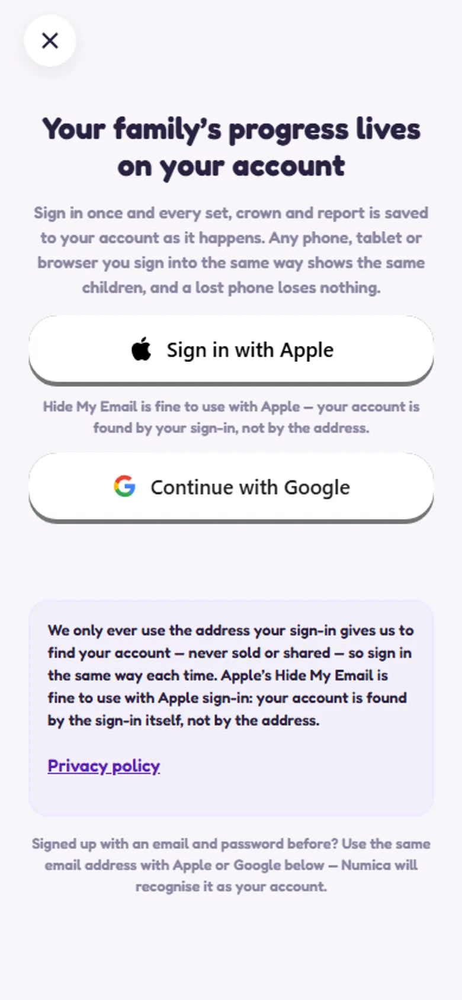
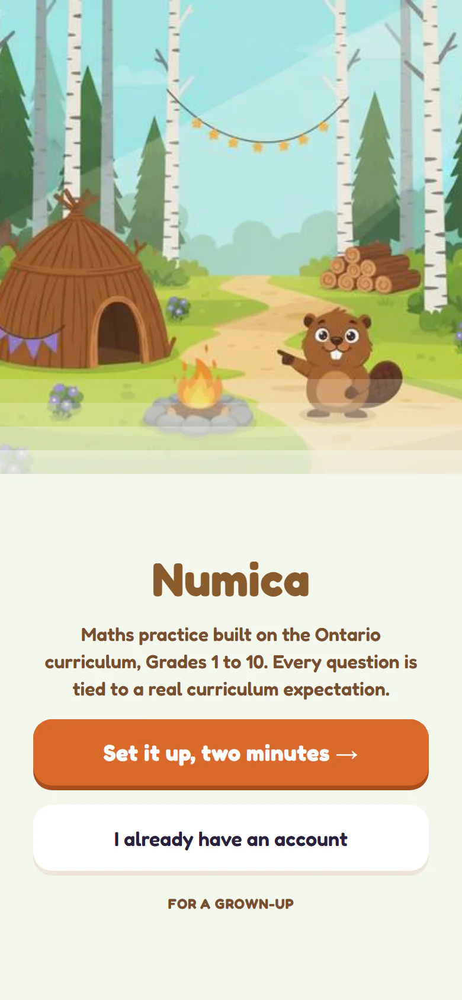
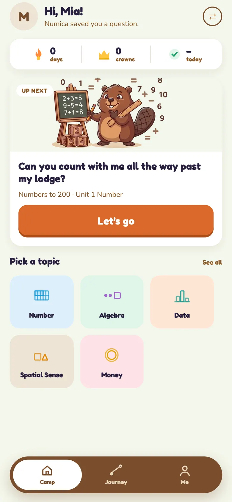
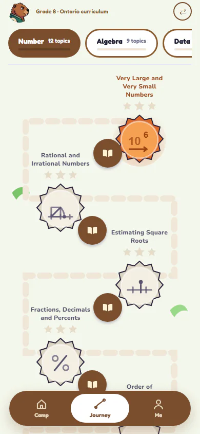
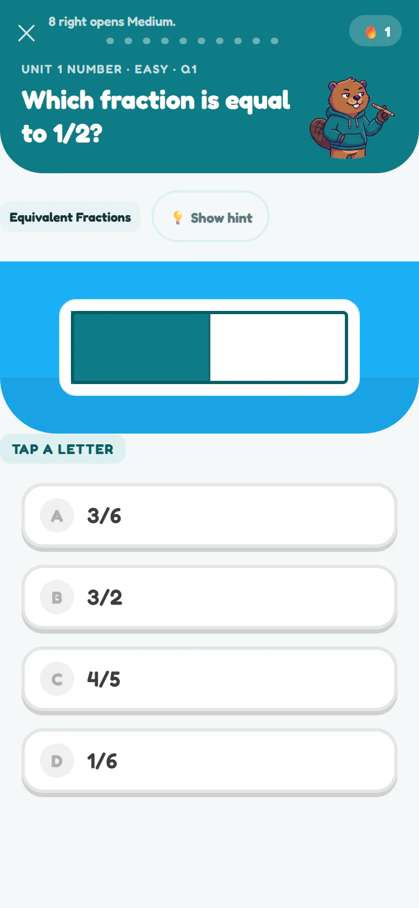
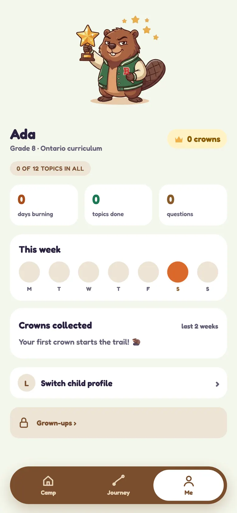
The parent view
Progress
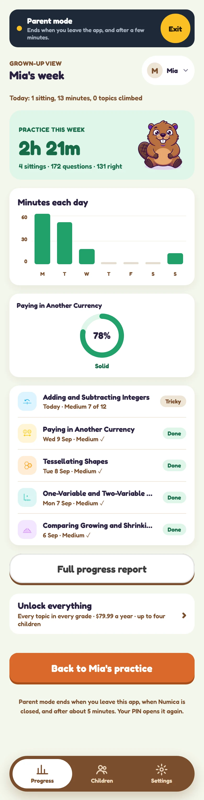
Children
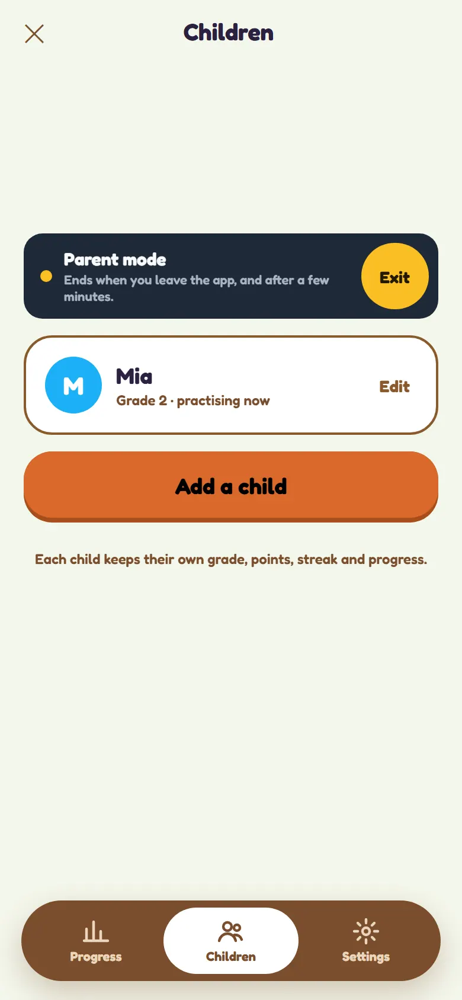
Full report
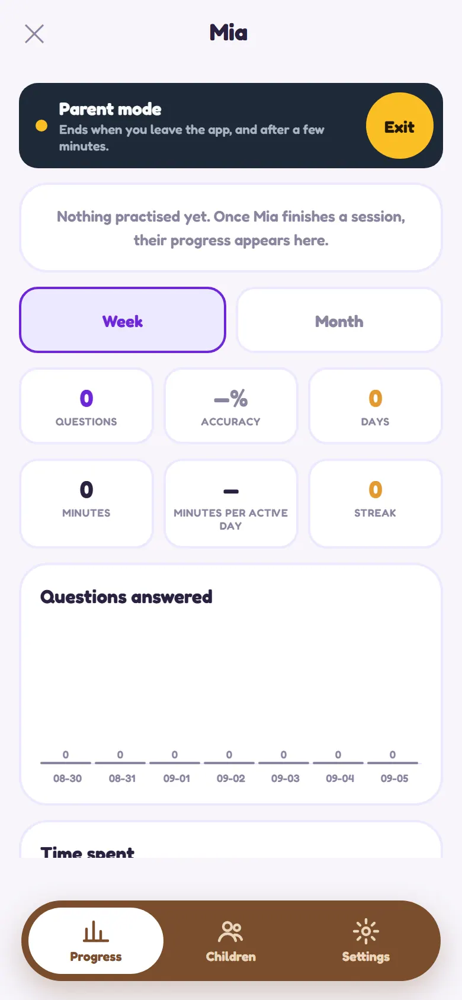
Settings
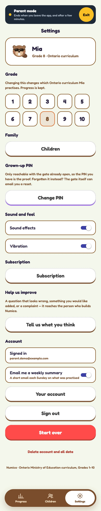
For parents
Stay close to the learning without standing over their shoulder.
Progress you can understand
See recent activity, progress by topic, and curriculum coverage in clear language.
Built around your family
Each child has their own grade, path, and progress under the family account.
Grown-up controls
A four-digit parent PIN protects settings and parent pages from curious little hands.
Private by design
Children practise. Parents stay in control.
Numica does not show ads or use tracking. A child’s information is limited to what the app needs to provide their grade-level practice and progress. Parent sign-in can use Google or Apple; those providers handle the sign-in step and do not receive children’s practice records.
Support
Need help with Numica?
Email sheray@gmail.com and a person will read your message.
You can permanently delete the family account and its children’s data inside Numica. If you cannot access the app, use the public request route.